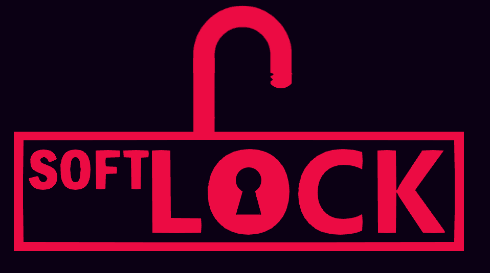

<!DOCTYPE html>
<html>
<head>
<title>SoftLock Studios</title>
</head>
</style>
</head>
<body style="background-color:rgb(11, 0, 20);">
</html>

<embed src="heh.mp3" loop="true" autostart="true" width="2" height="0">>

<center>


<hr>
  
<h4>Cherry Bomb</h4>

<h3>"Cherry Bomb" is an upcoming 2d platformer from SoftLock in the style of original platformers from the mid-1990s.</h3>  


  
<h3>It stars three playable characters, all closely based off 90s cartoon mascots of old.
<br> Cherry the Axolotl, Benny the Bobtail Squid, and Spike the Mantis Shrimp (pictured below).</h3>
  

  
<h3>While much of the game is still a work in progress, stay tuned for more updates and information in the future!</h3>
  


<center>

<hr>

<p style="background-color:Crimson;">Back To Main</p>
<a href="https://joeyb521.github.io/softlock/">Back to Main</a>

<br>

  
<h3> SoftLock Games Studios (LLC) is an independant games studio currently developing multiple projects in the coming years. 
<br>Thanks to NCV Content Group and Tokyo Music Walker for providing video footage and music respectively.
<br>And thanks to you for stopping by!</h3>

</center>


  
<html>
<head>
<style>
h1 {
  color: Crimson;
  font-family: Verdana;
  font-size: 300%;
}
h2 {
  color: Crimson;
  font-family: Verdana;
  font-size: 100%;
}
  h3 {
  color: Crimson;
  font-family: Verdana;
  font-size: 80%;
}
  h4 {
  color: Crimson;
  font-family: Verdana;
  font-size: 125%;
}
p {
  color: White;
  font-family: Trebuchet MS;
  font-size: 100%;
}
</style>
</head>
<body>

</body>
</html>
